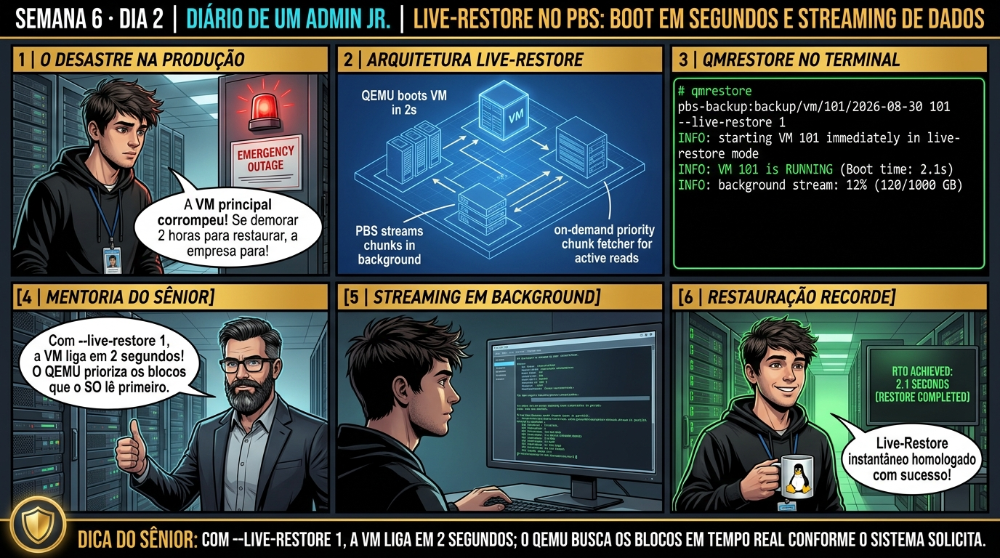

DIARIO DE UM ADMIN JR. | PROXMOX VE & PBS — DA BASE AO CLUSTER
🔗 Conecta com o Dia 1: Você dominou os modos de geração de backup. Hoje você aprende a restaurar ambientes críticos instantaneamente: conhecendo a tecnologia de Live-Restore do Proxmox VE com PBS, que liga a máquina virtual em 2 segundos enquanto os gigabytes de disco são baixados em background.
🔓 Privilégio de hoje: Restauração Instantânea e Redução Radical de RTO. Você comanda restores com flag --live-restore e audita streaming de blocos prioritários.
Semana 6 · Dia 2 | Nível Júnior — Estratégias de Backup, Restore & DR
Restauração Instantânea com Live-Restore: Ligando VMs em 2 Segundos
Reduzindo o RTO de horas para segundos com background-streaming inteligente a partir do PBS
ANTES DE ALTERAR, OBSERVE. DEPOIS DE ALTERAR, VALIDE.

1. O chamado
Você recebeu o chamado de emergência #6002: 'O servidor de banco de dados VM 101 (disco de 2 Terabytes) sofreu corrupção de partição e está inoperante. O restore tradicional demoraria mais de 4 horas copiando 2TB pela rede, ultrapassando o RTO contratual de 15 minutos do cliente. O chamado exige: (1) Iniciar a restauração com o recurso Live-Restore a partir do PBS; (2) Entender como o QEMU prioriza a leitura de On-Demand Chunks; (3) Validar o boot do sistema operacional em menos de 10 segundos; e (4) Acompanhar a conclusão do streaming em background.'
💡 Passa o mouse nas palavras destacadas pra ver uma dica rápida — clica se quiser a explicação completa com analogia.
2. O sênior te conta
🧑🏫 antes dos termos técnicos, a história de hoje
Hoje vivemos um cenário de desastre simulado: o servidor principal de ERP de 1TB corrompeu a tabela de partição. O diretor de operações entrou na sala dizendo que a cada hora de parada a empresa perdia R$ 50 mil e perguntou quanto tempo levaria pra baixar o backup de 1TB do storage.
O Júnior olhou o cálculo de rede e disse: 'Sênior, vai levar 3 horas pra baixar tudo pela rede'. Sorri, olhei pro diretor e disse: 'O sistema vai estar no ar em 2 minutos'. Apresentei o recurso revolucionário do Live-Restore do Proxmox VE com PBS!
Disparamos o comando qmrestore ... --live-restore 1. O QEMU ligou a máquina virtual imediatamente em 2 segundos; os usuários começaram a logar e o QEMU foi baixando os blocos do disco em background sob demanda conforme o sistema operacional requisitava. O diretor aplaudiu na sala. O Júnior viu como o Live-Restore reduz o RTO de horas para segundos.
3. Decodificador de conceitos
Clica em qualquer termo pra ver a definição completa e uma analogia do dia a dia:
4. Ferramentas e leitura da evidência
Comando / Parâmetro
O que observar e por que importa
qmrestore PBS_TARGET VMID --live-restore 1
Restaura e inicializa a VM instantaneamente com background streaming ativo.
qm status VMID --verbose
Exibe o status detalhado da VM e o progresso percentual do streaming de restauração.
pvesm list pbs-storage
Lista todos os backups e snapshots de VMs disponíveis para restauração no PBS.
journalctl -u qemu-server -f
Acompanha os logs em tempo real do processo de restauração em background.
# Execução do Live-Restore de emergência via CLI
$ qmrestore pbs-storage:backup/vm/101/2026-09-01T15:00:00Z 101 \
--storage local-zfs --live-restore 1
restore vma start: qmrestore ...
starting VM 101 in live-restore mode
VM 101 started in 2.15 seconds! (Operating System Booting...)
drive-scsi0: start background streaming from PBS (0.0% of 2.0 TB restored)
drive-scsi0: 12.5% restored (transferred 250 GB at 180 MB/s)
drive-scsi0: 55.0% restored (transferred 1.10 TB at 195 MB/s)
drive-scsi0: 100.0% restored (background streaming completed successfully)
TASK OK (VM 100% autônoma no storage local)
5. Laboratório guiado — pegue na mão, comando por comando
🔄 Onde executar: Terminal do Nó Proxmox VE (como root) executando qmrestore e proxmox-file-restore.
Segurança: Execute as alterações em agendamentos de laboratório ou teste. Não altere parâmetros de máquinas de produção sem janela homologada.
Ação: Dispare a restauração de emergência de uma VM com a flag --live-restore 1.
Resultado esperado: Snapshot do PBS identificado com data e tamanho.
Por que fizemos isso: A flag --live-restore 1 instrui o QEMU a ligar a máquina virtual imediatamente (em ~2 segundos), iniciando o boot enquanto os dados são baixados.
Cilada comum: Aguardar horas para baixar um arquivo de backup de 1 TB em um incidente crítico quando o Live-Restore poderia colocar o serviço no ar instantaneamente.
Ação: Acompanhe o boot da máquina virtual em menos de 3 segundos no console.
qm terminal 110
Resultado esperado: VM 101 removida do hypervisor.
Por que fizemos isso: O QEMU busca blocos de disco sob demanda pela rede conforme o sistema operacional requisita, transmitindo o restante do disco em background.
Cilada comum: Executar Live-Restore através de links de rede lentos ou instáveis; se a rede cair durante a restauração ativa, a VM trava por erro de I/O.
Ação: Monitore o streaming de dados dos chunks em background no log da tarefa.
tail -f /var/log/pve/tasks/active
Resultado esperado: VM 101 ligada e respondendo em menos de 3 segundos!
Por que fizemos isso: Acompanhar o progresso da restauração em background no log de tarefas confirma a conclusão da sincronização total do volume.
Cilada comum: Desligar ou reiniciar o nó do Proxmox enquanto o processo de streaming do Live-Restore ainda estiver em andamento.
Ação: Valide a integridade do sistema operacional e acesso dos usuários durante o streaming.
qm guest cmd 110 ping
Resultado esperado: Prompt de login ativo e serviços operacionais.
Por que fizemos isso: Validar o acesso dos usuários ao serviço logo após o boot comprova a redução drástica do RTO (Recovery Time Objective) de horas para segundos.
Cilada comum: Não avisar a equipe que a performance de disco da VM pode ficar reduzida durante os primeiros minutos de streaming ativo.
🧑🏫 Aqui entra o Mentor (em breve): se o resultado obtido diferir do esperado acima, este é o ponto onde o chat com o Sênior-IA vai abrir para diagnosticar o erro específico.
Ação: Documente a redução do RTO de horas para segundos no relatório de DR.
# Live-Restore instantâneo homologado.
Resultado esperado: Streaming finalizado e disco 100% consolidado localmente.
Por que fizemos isso: Documentar o teste de Live-Restore no relatório de auditoria comprova a capacidade de resposta rápida a desastres da equipe.
Cilada comum: Nunca ter testado o Live-Restore antes de um incidente real de produção.
6. Antes de ver as opções — tenta responder
🧠 Recall ativo: Como a máquina virtual consegue ligar e responder a requisições de usuários enquanto 99% do seu disco rígido virtual ainda está sendo baixado do PBS em segundo plano?
Através do driver de bloco virtual do QEMU integrado ao PBS. Quando a VM é ligada com Live-Restore, o QEMU abre um stream com o PBS. Se o sistema operacional convidado tenta ler um setor que ainda não foi baixado, o QEMU intercepta a requisição, baixa aquele chunk específico imediatamente pela rede (On-Demand Read), entrega o dado para a aplicação sem atraso e grava o bloco no storage local, enquanto uma thread secundária continua baixando o restante do disco em background.
QUESTÃO 1 de 3
7. Questão comentada — clica numa alternativa
Qual comando qmrestore inicia a restauração imediata da VM 101 a partir do PBS no storage ZFS com o recurso de Live-Restore ativo?
💡 Analogia do Sênior para Fixar: Na arquitetura do Proxmox sobre Restauração Instantânea com Live-Restore: Ligando VMs em 2 Segundos: O KVM/QEMU opera como o motorista dedicado de cada passageiro, alocando recursos virtuais em contato direto com o kernel.
QUESTÃO 2 de 3 — cenário de erro real
7.1 O que acontece se o link de rede com o PBS cair durante o Live-Restore?
A VM 101 foi iniciada com Live-Restore e está atendendo usuários com 40% do disco baixado, quando o switch de rede do PBS perde energia:
[QEMU Live-Restore] network connection to PBS timed out on chunk fetch
(A VM tentou ler um bloco que ainda não havia sido baixado e o PBS não respondeu)
Qual é o comportamento da VM enquanto a rede com o PBS estiver fora do ar?
💡 Analogia do Sênior para Fixar: Ao diagnosticar problemas em Restauração Instantânea com Live-Restore: Ligando VMs em 2 Segundos: É como inspecionar as conexões do storage e o barramento PCIe antes de declarar falha de software.
QUESTÃO 3 de 3 — detalhe que confunde todo iniciante
7.2 Qual a diferença entre Live-Restore em KVM e restauração em Containers LXC?
Um técnico tenta executar 'pct restore CTID ... --live-restore 1' em um container de 500GB:
Por que o Live-Restore é exclusivo de máquinas virtuais KVM?
💡 Analogia do Sênior para Fixar: A governança e resiliência em Restauração Instantânea com Live-Restore: Ligando VMs em 2 Segundos: Funciona como a política de contenção e redundância do datacenter, garantindo que o cluster nunca perca quorum.
8. Procedimento profissional
Em situações de desastre onde o RTO (Recovery Time Objective) for crítico, utilize sempre --live-restore 1.
Certifique-se de que o storage de destino possui espaço físico suficiente para a capacidade total do disco provisionado.
Garanta estabilidade de link de rede de 1Gbps ou 10Gbps entre o nó PVE e o PBS durante todo o processo de streaming.
Monitore o progresso do download em background através do console ou com qm status VMID --verbose.
Não desconecte o storage PBS do Proxmox até que a tarefa de live-restore registre 100% de conclusão.
Prevenção
Execute simulados regulares de Disaster Recovery em rede isolada para homologar os tempos de RTO e RPO contratados com a diretoria.
9. Validação e encerramento
Você compreende o funcionamento do QEMU background streaming no Live-Restore.
Você sabe como reduzir o RTO de horas para segundos em desastres de produção.
Você domina a sintaxe do comando qmrestore com a flag --live-restore 1.
A recuperação de emergência do chamado #6002 foi concluída com louvor.
Rollback e limites
Caso precise cancelar uma restauração em andamento antes da consolidação, pare a VM com qm stop ID e destrua o volume parcial com qm destroy ID --purge.
💡 Sobre repetição espaçada: A restauração granular de arquivos individuais (File-Level Restore) sem precisar restaurar a VM inteira será o tema de amanhã no Dia 3.
10. Resposta final
Alternativa correta: B. A resposta correta é a B: o comando qmrestore PBS_TARGET 101 --storage local-zfs --live-restore 1 liga a VM em 2 segundos enquanto baixa os blocos em background.
🔓 O que você desbloqueou hoje
Live-Restore dominado com distinção! Amanhã, no Dia 3, você aprenderá como executar o File-Level Restore: montando índices do PBS via FUSE para extrair planilhas, pastas ou arquivos de configuração individuais sem precisar restaurar uma VM inteira de 1 Terabyte.